|
Virtual Sound Gallery is a web stage for modern multichannel music, sound and audiovisual art. The works are presented in several virtual exhibitions, classified by concepts, styles and organizations. Please use your headphones to hear the 3d spatial effect, produced by the binaural algorithm. ContributorsAnton Andersen trianman@gmail.com - WebVR functionality Alexey Kopeikin kopeikin88@gmail.com - WebVR functionality Alexander Scheglov akscheglov@gmail.com - WebVR functionality Call for worksIf you want to expose your work on the Virtual Sound Gallery stage, please contact me by email. Created by Andrey Bundin 2015-2016All rights reserved ibundin@gmail.com | ✕ |
|  |
VIRTUAL SOUND GALLERY |
| ABOUT |
A web stage for modern multichannel music, sound and audiovisual art. Works are presented in several virtual exhibitions, classified by concepts, styles, and organizations.
Please use headphones to perceive spatial sound decoded using binaural algorithms within the "Virtual Sound Gallery" environment. You can freely walk inside the VR space by pressing w-s-a-d or arrow keys and space to jump.